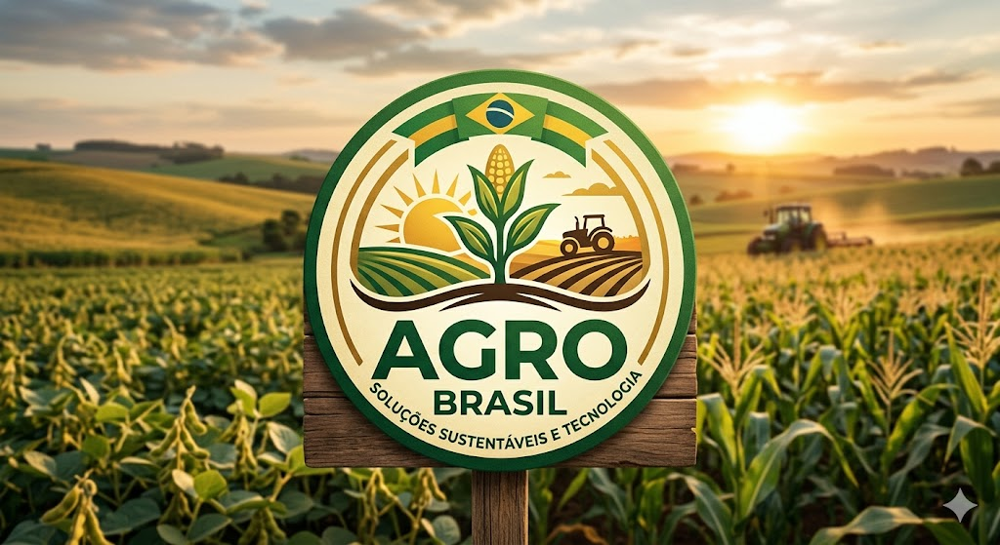
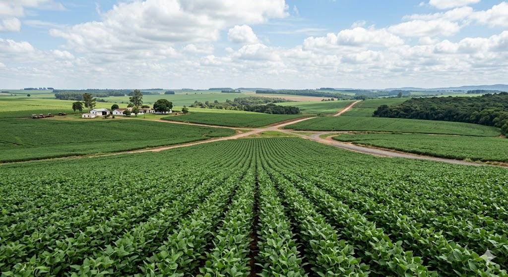
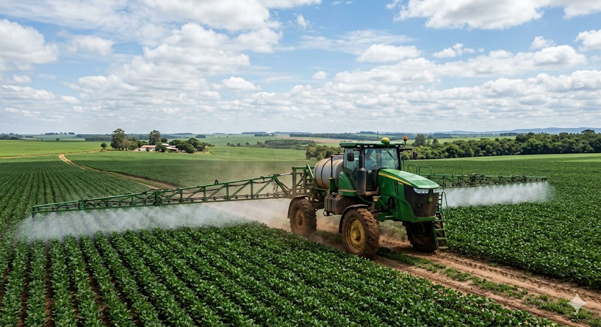
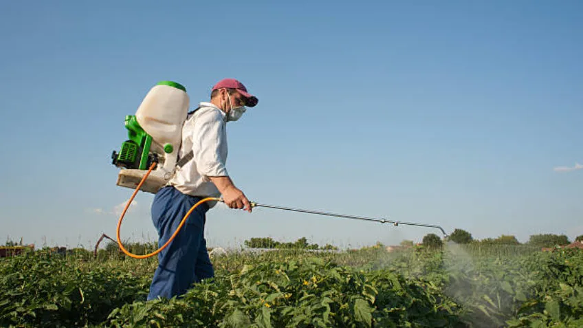

_28mar09.jpg)

O uso de defensivos agrícolas convencionais é uma prática comum na agricultura moderna, mas seus impactos ambientais e à saúde humana têm gerado preocupação crescente. Como alternativa, muitos produtores têm buscado soluções mais sustentáveis que combinem eficiência no controle de pragas e baixo risco para o meio ambiente.

Um exemplo promissor é o uso de insetos benéficos, como joaninhas e vespas parasitóides, que atacam pragas específicas sem prejudicar outras espécies ou o solo. Essa abordagem permite o controle natural das pragas, reduzindo a necessidade de produtos químicos e mantendo o equilíbrio ecológico da lavoura. Além disso, como os insetos se reproduzem e se mantêm no ambiente, o efeito pode ser duradouro, diminuindo custos a longo prazo.

Outra alternativa são os extratos vegetais e óleos essenciais, extraídos de plantas com propriedades repelentes ou inseticidas, como neem, alho e pimenta. Esses produtos apresentam baixa toxicidade para seres humanos e animais, degradam-se rapidamente no solo e podem ser aplicados de forma seletiva. Essa prática representa uma solução sustentável, integrando o manejo de pragas à produção orgânica e à preservação ambiental.
